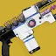

推荐者：
年糕明左键清屏和谐棱镜术
 术士 · 棱镜 · 强度S29 · 凯旋纪念碑
术士 · 棱镜 · 强度S29 · 凯旋纪念碑
大招超快，激光笔长按左键清屏
适用环境
标签
# 左键清屏和谐棱镜术 推荐人：年糕明 描述：大招超快，激光笔长按左键清屏 更新：2026.9.1 场景：通用 定位：清怪、功能 分支：棱镜 类别：强度 核心：裂波者 ## 职业 职业：术士 超能：新星炸弹：灾变 星相：闪电激涌、虚空供养 碎片：保护琢面、孤独琢面、指挥琢面、勇气琢面、使命琢面 手雷：治愈手雷 近战：神秘织针 职业技能：凤凰俯冲 ## 武器 异域武器：裂波者 传说武器：最后仪式 | 边打边劫、高爆载荷 传说武器：拜龙教镰刀 | 急切刀锋、旋风利刃 ## 护甲 异域护甲：战斗和谐护肩 套装：埃希恩记忆 2 件 × 埃希恩记忆 4 件 头盔：特殊武器弹药搜寻者、虹吸、特殊弹药斥候 护臂：回天掌法、谐振装弹装置、伤害感应 胸甲：震荡阻尼器 腿部：层层不绝、复原、谐振回收器 职业物品：强力吸引、特殊终结技、感应护盾 ## 神器 神器：废墟石板 模组：元素虹吸、不稳定神枪手、邪恶收割、严酷折射、弹中藏金、元素超充器、崩解 ## 六维 六维：生命 ~ ｜ 近战 ~ ｜ 手雷 ~ ｜ 超能 100+ ｜ 职业 ~ ｜ 武器 150～200 ## 注解 优点：超能很快+弹药生成效率高+清杂效率高+产球高 缺点：上限有限但是常态及格 1、启动方法：用滑铲造成击杀、或者吃一颗治愈雷进入恢复状态后，持续输出产球启动裂波者 2、左键开滋，所有的技能都是为了生存服务； 这个配装只要基本功过关，可以单人平推终极以下的所有副本，如果想输出可以把威能位换成【揭纱露眼】，崩解换粒子重构
职业
武器
神器模组
护甲
- 生命~
- 近战~
- 手雷~
- 超能100+
- 职业~
- 武器150～200
护臂
胸甲
注解
优点：超能很快+弹药生成效率高+清杂效率高+产球高
缺点：上限有限但是常态及格
1、启动方法：用滑铲造成击杀、或者吃一颗治愈雷进入恢复状态后，持续输出产球启动裂波者
2、左键开滋，所有的技能都是为了生存服务；
这个配装只要基本功过关，可以单人平推终极以下的所有副本，如果想输出可以把威能位换成【揭纱露眼】，崩解换粒子重构